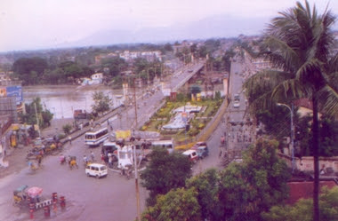
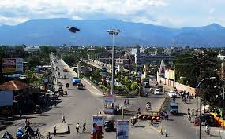
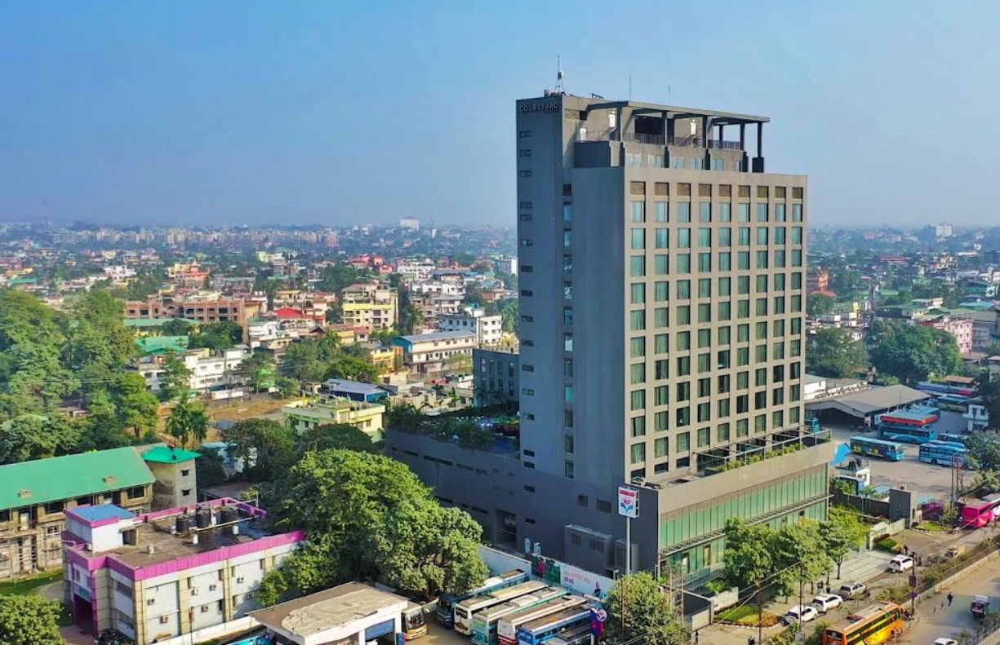

Siliguri , the gate way to the North East India is not only of vital importance to the State of West Bengal but India as a
whole. Locatied at the foot of Himalayas on the verge of Terai, it presents the picturesque glimpse of the Himalayan ranges establishing
its inmate charm to a visitor. Though the settlement started initially with the tea plantation and a junction station to change over to
the Toy train for Darjeeling in 1880 it acquired the status of Sub Divisional town in 1907.Though by thirties it had gained weightage as
a town, it was confirmed Municipal status only in 1950.The independence of India in 1947 provided a boom for the growth of the town with
the continuous streams of inflow of refugees from the then East Pakistan.
The Chinese aggression in 1962 and the declaration of National Emergency put the town in
the strategic map of India with renewed importance. Siliguri is located in the narrow corridor connecting North-East with the rest of
India with Bhutan in the North-East , Bangladesh in the south and Nepal in the west . Siliguri is also re-discovered as the most vulnerable nodal
point in the narrow corridor that links North Eastern States with the rest of India. Assam rail link in 1951 and broad gauge railway
links with New Jalpaiguri in 1962 paved the way for its unquestionable supremacy as a primary trading Centre not only for Assam but also
for Bhutan, Sikkim and Eastern Nepal as well.

Proximity to the international borders with
Bangladesh , Nepal , Bhutan, and also China places Siliguri at a strategic significance. In respect of trade , commerce and tourist
traffic Siliguri occupies an extremely important position for Sikkim , Assam, Nepal, Bhutan and Bangladesh. Presently Siliguri is the
hub of the Rail Road net work in the region connecting Assam, North Bengal, Bhutan, Sikkim and Eastern Nepal with the rest of West Bengal
and India. The strategic location in the transportation net work of North Eastern India has helped in its growth as a primary trade and
distribution centers of North Bengal.

Siliguri is the largest and fastest growing city in North Bengal. The growth rate in decade 1971- 81 was 57.8 % .
Considering the rapid growth of the city and inadequate facilities, Siliguri was brought under I.U.D.P programme in 1981 and some
urgently needed schemes were taken up which provided some immediate relief in the infrastructure facilities and civic services of
the city.Siliguri has registered a growth rate of population 46.83 % in the 1981-1991 decade. The spurt in transport and trading
activities is also apparent. With the rapid growth of population and activities, the urban facilities and services are falling far
too short of the demand. The Municipal resources and annual state grants are not matched to the growing need of the city. As such the
city demands a short term Development Plan at least to cope up with the immediate essential needs of the town without which the city
will fail to play its desired role in the region effectively.
